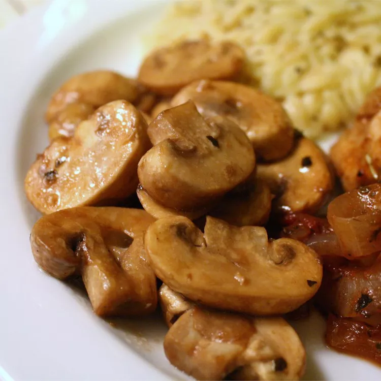

Victor's (formerly Pat's (formerly Pat's unnamed son-in-laws)) Mushroom Saute

Description
One of my favorite recipes I've stolen from allrecipes.com. In this case the original recipe was named after Pat. But Pat himself seems to have stolen it from his son-in-law who he did not name. Consider this justice.
Ingredients
- 2 tablespoons butter
- 1/2 tablespon olive oil
- 1/2 tablespoon balsamic vinegar
- 1 clove garlic
- 1/8 teaspoon dried oregano
- 1pound button mushrooms, sliced
Directions
- Melt butter with oil in a large skillet over medium heat. Stir in balsamic vinegar, garlic, oregano, and mushrooms. Saute for 20 minutes, or until tender.